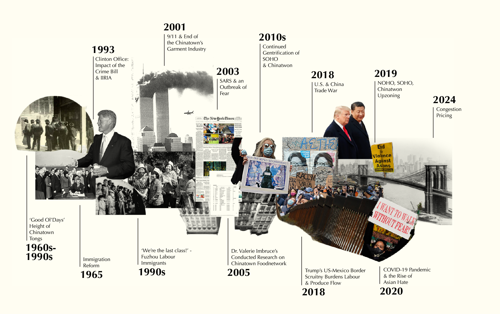

Tongs: The Hidden Hands of Chinatown's Produce
我採訪的批發商和供應商對他們早期參與 堂口 開玩笑。 堂口 最初成立於 1800 年代的中國移民對支持、保護和倡導免受歧視的需求。這些堂幫助解決住房、就業和社區糾紛，但許多人轉向賣淫、販賣人口、賭博和吸食鴉片謀利。
A Step Forward: The 1965 Immigration Law
1965年的《移民和國籍法》廢除了極有利於歐洲移民的配額制度，為更多亞洲移民進入美國打開了大門。在這部法律之前，1882年的排華法案禁止中國移民入境，隨後的法律進一步限制了亞裔移民。
Fear and Mistrust: The 1994 Crime Bill and IIRIRA
我採訪的許多供應商提到克林頓政府是一個特別困難的時期，引用了 1994 年犯罪法案和 1996 年非法移民改革和移民責任法案 (IIRIRA) 的影響。他們將 Tongs 的結束和驅逐出境的興起歸因於對這些政策變化。對他們來說，這是一個充滿恐懼和不信任的動盪時期。
Fujianese Immigrants: “We’re the last class!”
在 20 世紀 80 年代，越來越多的福州移民開始抵達曼哈頓的曼哈頓華埠。由於曼哈頓的曼哈頓華埠主要講廣東話，所以很多人無法很好地融入那裡。
9/11 & the End of Chinatown's Garment Industry
自 9/11 以來，紐約警察局總部周圍公園街的東半部——從布魯克林大橋的曼哈頓端到查塔姆廣場——一直是一個禁止交通的安全區。再加上布魯克林大橋，這在曼哈頓華埠和主要的消費者來源地曼哈頓下城之間形成了一道心理和物理屏障。
SARS & Chinatown: An Epidemic of Fear
2003 年的 SARS 流行給曼哈頓華埠蒙上了污名，儘管曼哈頓華埠沒有報告過 SARS 病例。供應商聲稱，它引發的恐懼導致客戶大量流失。
The Last Snapshot in Time: Imbruce Captures the Network in 2005
2005 年和 2006 年，Valerie Imbruce 對曼哈頓華埠的農產品網絡進行了研究，收集了該系統的定量和定性數據。她最終於 2016 年將它們發表在她的書《從農場到運河街》中。
Closing Shop: The Rise of Luxury Condos and the Exodus of Wholesalers from Chinatown
SoHo 的中產階級化始於 1970 年代，最終在 2000 年代蔓延到曼哈頓華埠。到 2007 年，豪華公寓開始從 SoHo 蔓延到曼哈頓華埠。隨著豪華公寓和高檔零售店開始佔領該地區，房產價值和租金上漲，使得包括曼哈頓華埠居民在內的許多長期居民越來越難以負擔住在那裡的費用。這導致位於肯梅爾和布魯姆沿線的許多批發商倒閉，其中一些批發商搬到了東威廉斯堡。
Informal Trade Channels Meet Formal Restriction: Caught in the Crosshairs of Trump's Border Policies
特朗普時代的移民和邊境管制政策對美墨邊境產生了重大影響，進而影響了依賴墨西哥勞動力和貨物的行業和社區。這包括曼哈頓華埠的農產品市場，該市場通常依賴於來自墨西哥的非正式貿易和勞動力渠道。特朗普政府試圖修建邊界牆並打擊來自墨西哥的非法移民，導致對跨境貿易和勞動力的審查和限制增加。這直接影響了曼哈頓華埠市場所依賴的農產品和其他商品的可用性和成本，以及在市場本身工作的勞動力的可用性。
A Casualty of Trump's Trade War
特朗普時代美中貿易戰的影響始於 2018 年美國宣布對中國商品徵收關稅，曼哈頓華埠的許多企業都感受到了這一影響。雖然產品很少從中國採購，但公司的許多其他費用，如包裝和設備，確實來自中國。因此，供應商注意到兩國之間的緊張局勢導致成本上升。
From Streetfront to Skylines: SoHo, NoHo, and Chinatown's Upzoning
2018 年，紐約市議會批准了一項重新分區計劃，允許在 SoHo、NoHo 和曼哈頓華埠的部分地區建造更高更大的建築。儘管該計劃旨在鼓勵該地區更多的住宅開發和增加經濟適用房，但升級分區也引發了人們對小企業和長期居民可能流離失所的擔憂。許多人將取代曼哈頓華埠街頭商店街的畫廊湧入歸咎於升級分區引起的房地產投機。預計升級分區將導致奢侈品開發項目和連鎖店的湧入，推高租金並使該地區歷史上繁榮的社區無法負擔。
The Slow Road to Recovery: Chinatown's Struggles Against Lingering Impacts of COVID-19
雖然大流行影響了每個人，但曼哈頓華埠受到的打擊尤其嚴重。從 2019 年到 2021 年，曼哈頓華埠失去了 26% 的工作崗位，而全市這一比例為 14%。這可能是由於反亞裔仇恨和恐懼症的上升而加劇的。一些企業擔心污名化會阻止一些顧客再次光顧。
Looking Ahead: What The Toll of Congestion Pricing would be on Chinatown's Fresh Produce
許多農產品供應商和批發商擔心可能會在曼哈頓市中心實施擁堵收費；有些人甚至聲稱那將是棺材上的釘子。該計劃要求司機在進入曼哈頓第 60 街以南指定的“擁堵區”時支付通行費。確切的通行費數額尚未確定，但預計在高峰時段小汽車約為 12 美元，卡車約為 25 美元。
由於批發商已從曼哈頓定價並搬遷至東威廉斯堡，因此在目前免費的布魯克林大橋上實施擁堵收費將增加這些批發商的運輸成本。